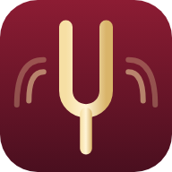

Stroik
Strojenie
Metronom
–
BPM
Allegro
−
+
Akcent
Podział
−
1
+
bez podziału
Ustawienia
Strój: a¹ =
440
Hz
−
+
432
440
442
443
Automatycznie rozpoznawaj strunę
Dźwięk po nastrojeniu
posłuchaj
Wyczyść oznaczenia nastrojonych strun
Gotowe

Zainstaluj Stroik
Aplikacja na ekranie głównym, działa też bez internetu.
Stuknij
Udostępnij
, potem
Do ekranu początkowego
.
Zainstaluj
✕
Dostępna nowa wersja
Twoje ustawienia zostaną zachowane.
Odśwież
Później